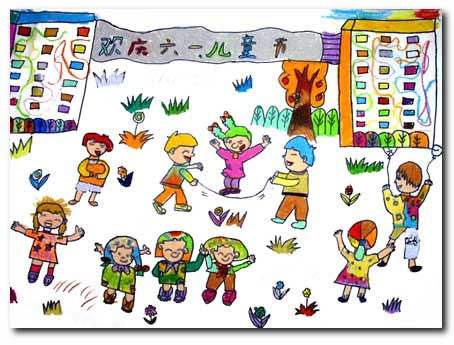
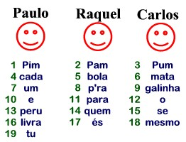

Para efeitos da nota atribuida à resolução de exercícios ao longo do semestre - Submeter até 23:59 de 11 de Dezembro
(o problema continuará depois disponível para submissão, mas sem contar para a nota)
[para perceber o contexto do problema deve ler o guião da aula #07]
Neste problema deverá submeter uma
classe ED006 contendo um programa completo para resolver o
problema (ou seja, com o método main).
Pode assumir que no Mooshak terá acesso às
classes Node<T> e CircularLinkedList<T>
como dadas nas aulas (ou seja, não precisa de as incluir no código submetido).
 "Pim, Pam, Pum, cada bola mata um, p'ra galinha e para o peru quem se livra és mesmo tu"
Quem não se lembra de ter feito este jogo quando era pequeno? A ideia é muito simples. A frase atrás descrita tem 19 palavras:
"Pim, Pam, Pum, cada bola mata um, p'ra galinha e para o peru quem se livra és mesmo tu" 1 2 3 4 5 6 7 8 9 10 11 12 13 14 15 16 17 18 19
3 crianças resolveram jogar este jogo, o Paulo, a Raquel e o Carlos, que estão dispostas por esta ordem. O Paulo começa a dizer a frase, e em cada palavra vai apontando para as pessoas. Ao chegar ao fim da lista de pessoas, volta ao início, a ele mesmo, como exemplificado.

Figura 1 - Exemplo do jogo do "Pim, Pam, Pum" com 3 crianças.
Quem se livrava no início era o Paulo. Agora imagina que o jogo continuava. A pessoa que se livrou sai da lista, e a contagem recomeça na próxima pessoa (neste caso a Raquel). Quem se livrava a seguir era a Raquel e o Carlos, coitado, era o que não se livrava.
Descontente com isto, o Carlos, sabendo que és um bom programador, resolveu pedir-te ajuda. O que ele quer saber é, dada uma configuração inicial, se ele irá perder o jogo. O pior é que ele não sabe que frase vai ser usada. Por vezes e aquela frase comprida, outras vezes é uma mais pequena (como por exemplo, "Pim, Pam, Pum, quem se livra és tu", que neste caso teria 8 palavras). Podes ajudá-lo?
A primeira linha contém um número N indicando o número de casos a analisar-
De seguida vêm N casos, cada um definido por duas linhas:
Podes assumir que um dos nomes (que são sempre formados por uma única palavra) será sempre "Carlos" e que a frase será apenas constituída por letras (maísculas ou minúsculas, mas sem acentos) e espaços (para efeitos de contagem, uma palavra é uma sequência de caracteres delimitada por espaços ou mudanças de linha).
| Input | Output |
|---|---|
2 Pim Pam Pum cada bola mata um pra galinha e para o peru quem se livra es mesmo tu 3 Paulo Raquel Carlos Pim Pam Pum quem se livra es tu 4 Fernando Eduardo Pedro Carlos |
O Carlos nao se livrou O Carlos livrou-se (coitado do Pedro!) |
Estruturas de Dados (CC1007)
DCC/FCUP - Faculdade de Ciências da Universidade do Porto